Как читать авторский курс и нормативные материалы
Это учебные материалы, а не заключение о соответствии конкретного продукта. Организационные модели курса отделяйте от терминов стандарта: ППК в опубликованном проекте — машиночитаемый перечень, а живой реестр его версий является практикой сопровождения. Термин OSA в разных материалах имеет разный охват. Статус и обязательность нормативного документа проверяются отдельно; проект КАПО опубликован как проект первой редакции.
М05. Инструменты генерации SBOM
Зачем этот модуль
SBOM не «получается» нажатием одной кнопки — то, что попадёт в bom.json, целиком определяется тем, какой инструмент запустили, на каком входе и в каком режиме. Syft, Trivy и cdxgen смотрят на проект под разными углами: один читает манифесты и lock-файлы, другой умеет залезть в собранный образ и бинарь, третий вытягивает граф из системы сборки. Запусти три инструмента на одном репозитории — получишь три разных SBOM с разным числом компонентов, разной полнотой PURL и разным набором лицензий. Этот модуль учит понимать, что именно видит и чего не видит каждый генератор, осознанно выбирать инструмент под экосистему и фиксировать вход так, чтобы результат был воспроизводим.
Отдельный фокус модуля — C/C++, где ни один генератор не отдаёт полный состав сам: cdxgen восстанавливает часть графа из системы сборки, а недостающие факты (динамические библиотеки, маппинг на DEB) дотягивает обогащение «генератором фактов». Глубокий разбор C/C++ — в М09; здесь мы разбираем инструменты как таковые.
Ключевые понятия
- Манифест-скан vs бинарь-скан: чтение
package-lock.json/requirements.txt/go.sumпротив анализа собранного образа, слоёв и ELF-файлов. Разный охват, разные слепые зоны. - Что видит инструмент: Syft — пакеты в файловой системе и образах; Trivy — то же плюс встроенный сканер уязвимостей; cdxgen — граф из системы сборки для множества экосистем, включая C/C++.
- Фиксация версии инструмента и входа: SBOM без зафиксированных tool version, commit/tag и параметров запуска нельзя воспроизвести и нельзя сравнивать во времени.
- Обогащение результата: сырой cdxgen-SBOM для C/C++ дополняется бинарным анализом ELF и маппингом библиотек на пакеты — этим занимается отдельная enrichment-утилита («генератор фактов»).
Миникарта модуля

Нормативная опора
NIST SP 800-218 SSDF (PS.3.2 — формировать и сохранять SBOM) · BSI TR-03183-2 v2.1.0 (требования к качеству SBOM) · CycloneDX ECMA-424 (формат) · NTIA Minimum Elements for SBOM · CISA Minimum Elements for SBOM · ГОСТ Р 56939-2024
Материалы модуля
- 01 Конспект — что видит каждый генератор, манифест vs бинарь, роль обогащения для C/C++.
- 02 План занятия — 90 минут: теория, демо трёх инструментов, практика-сравнение.
- 03 Практическая работа — сгенерировать SBOM тремя инструментами и сравнить охват.
- 04 Контрольные вопросы — вопросы и кейс-задачи.
- 05 Что проверять на проекте — чек-лист аудитора по генерации SBOM.
Связанные практики
П03. Генерация SBOM через Syft · П04. Генерация SBOM через cdxgen для C C++ · П05. Trivy как генератор и сканер
Связь с другими модулями
- Вперёд: М09 — детальный разбор C/C++, ELF, DEB-маппинга и обогащения, на которые здесь только указано.
Практический результат
Слушатель умеет: выбрать генератор под экосистему; запустить Syft, Trivy и cdxgen с зафиксированными версией и входом; прочитать bom.json и оценить, что вошло в SBOM, а что осталось слепой зоной; объяснить, зачем сырой C/C++ SBOM отдают на обогащение «генератору фактов».